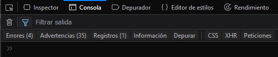
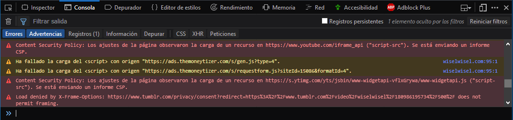
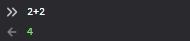
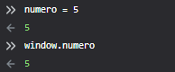
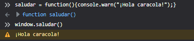

Las herramientas de desarrollo de firefox tiene una consola que nos avisa de errores presentes en nuestra página, si vamos a la pestaña consola de las erramientas de navegación, podremos ver los errores y advertencias de nuestra página web.

Al hacer click en errores o advertencias podremos ver un listado de los mismos:

Los tipos de errores que podemos encontrar son:
- Error: Son de color rojo, evita que el programa se compile correctamente y normalmente son errores de sintaxis.
- Advertencia: Son amarillas y sí que permiten que el programa se compile, simplemente advierte sobre código que no es óptimo o fallos de diseño.
- Mensaje: Su color es gris y pese a ser parecido a la advertencia, su uso no es tan común.
La consola también nos permite el uso de expresiones de javaScript en tiempo real, como sumar:

También podemos declarar variables e imprimirlas:

O incluso crear y utlizar funciones:
